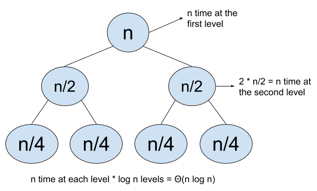
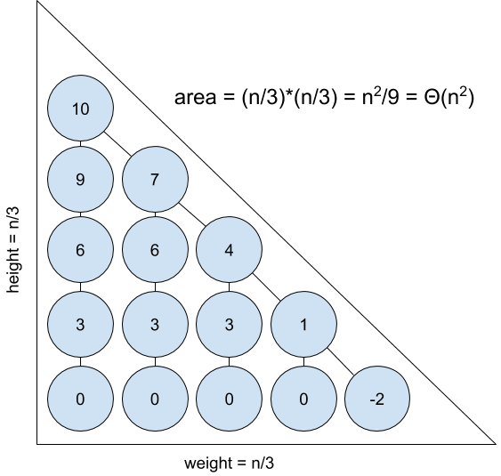

A more formulaic approach to asymptotics questions is usually more effective than an intuitive approach. I try to bin how I approach asymptotics questions into one of five categories. Here they are in order of ascending effectiveness.
This post is meant to be a compliment to my 61A slides found here
Inspection is glancing over the code and deciding the runtime. This is what everyone tries when they first learn about asymptotics: it can work for simple questions, but usually misleads or doesn't help if there is a small trick in the question.
Example
def foo(n):
for i in range(n):
for j in range(n):
print("hello")
return 7
Solution
Each of the loops go from 1 to n, increasing by 1, and the loops are independent of eachother, so the runtime is \(n \cdot n = \Theta(n^2)\).
This technique is useful for deciding if a function is linear, faster than linear (sublinear), or slower than linear (superlinear) quickly. Choose a number, perhaps \(n = 100\), and run the function with that input. If it takes a short amount of time, you know it is probably less than linear: constant, logarithmic, or \(\Theta(\sqrt{n})\) for 61A purposes; if it appears to chug along steadily with \(n\), then it is linear; if the function seems to take a really long time for \(n = 100\), maybe the function is quadratic (or exponential, etc).
You can also try a smaller value, say \(n = 10\), and if the function still takes a long time, perhaps the function is exponential, and vice-versa for large n and fast functions.
Example
def bar(n):
if n % 4 == 0:
return "done!"
return bar(n - 1)
Solution
Try this for \(n=100\), and you'll notice you finish immediately. That was fast, so let's try a bigger value: \(n=10003\). There are 3 recursive calls, then we hit 10,000 and once again it completes instantly. That was way faster than even \(\Theta(\log n)\): the runtime must be constant, \(\Theta(1)\)
Related to test inputs is change in input size: Observe the following:
This is often a quicker way of reasoning about the runtime than sample inputs. You can derive these relationships yourself by plugging in \(n + 1\) to functions (for example: \(2^{n + 1} = 2 \cdot 2^n\) which implies the relationship for \(\Theta(2^n)\)).
Example
def yarbin(n):
while n > 1:
n = n / 2
Solution
First we try increasing \(n\) by 1: that doesn't seem to affect the runtime. What about doubling \(n\)? That would make the while loop run for one more iteration. That means we are in the first relationship listed; the runtime is \(\Theta(\log n)\)
For functions using recursion, drawing a tree of the recursive calls (labelling the nodes with the value of \(n\) for that function call) is often the best choice, especially (fittingly) for tree-recursive question. For these questions, the runtime is usually either (1) the number of nodes times the time per node (often constant) or (2) the number of levels times the time per level.
Example
def cauchy(n):
if n <= 1:
return None
for i in range(n):
print("how do like them apples?")
cauchy(n//2)
cauchy(n//2)
Solution
The diagram above explains how to use recursion trees for this problem. We use the second kind of analysis (level-by-level analysis). The combined runtime of all nodes on one level is \(n\), and there are \(\log n\) levels, so the runtime is \(\Theta(n \log n)\)
This is the most effective and least utilized method when it comes to asymptotic problems: draw a picture who's area/volume is the runtime of the function.
Example
def schwartz(n):
if n <= 0:
return None
schwartz(n - 3)
if n % 3 != 0:
schwartz(n - (n % 3))
Solution
I've drawn the recursion tree for the \(n = 10\) case above: notice that it forms a triangle with width \(\frac{n}{3}\) and height \(\frac{n}{3}\), so the area is \(\frac{n^2}{18} = \Theta(n^2)\). Each node takes constant time, so the runtime is \(\Theta(n^2)\).
I've kept this post intentionally narrow, so now I will mention some details that are also useful to know, but I will not go over them in depth. Two sums to memorize are \(1 + 2 + 3 + \ldots + (n - 1) + n = \frac{n(n + 1)}{2} \in \Theta(n^2)\) and \(1 + 2 + 4 + \ldots + \frac{n}{2} + n = 2n - 1 \in \Theta(n)\) (a good exercise to see why these come up often is to think of the loops that would run for exactly those amounts of time). A fact to know is that a number \(N\) can be represented in \(\Theta(\log N)\) bits and/or digits. The base of a logarithm does not matter for big-Theta because it is equivalent to multiplying by a constant (this one is also in the official 61A slides).
There are a few more details to know for future classes (amortization and cost model for 61B and master theorem, harmonic series, and pseudopolynomial for 170) but going over those would be getting into the weeds. Best of luck to any 61A students preparing for an exam!